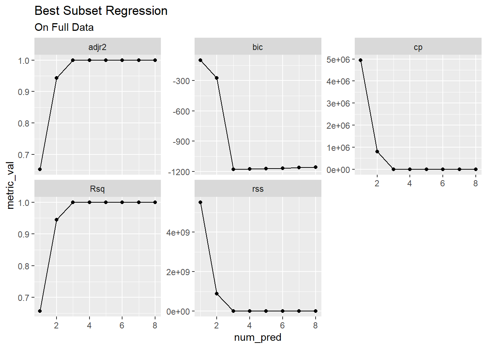
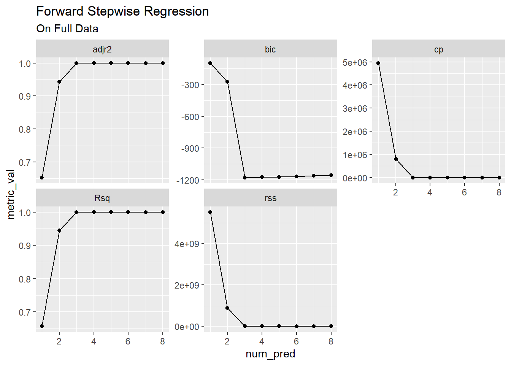
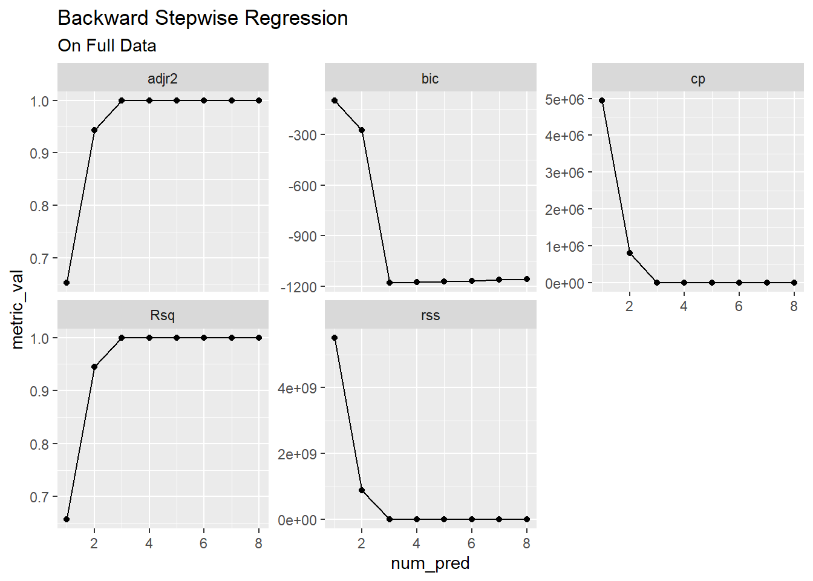
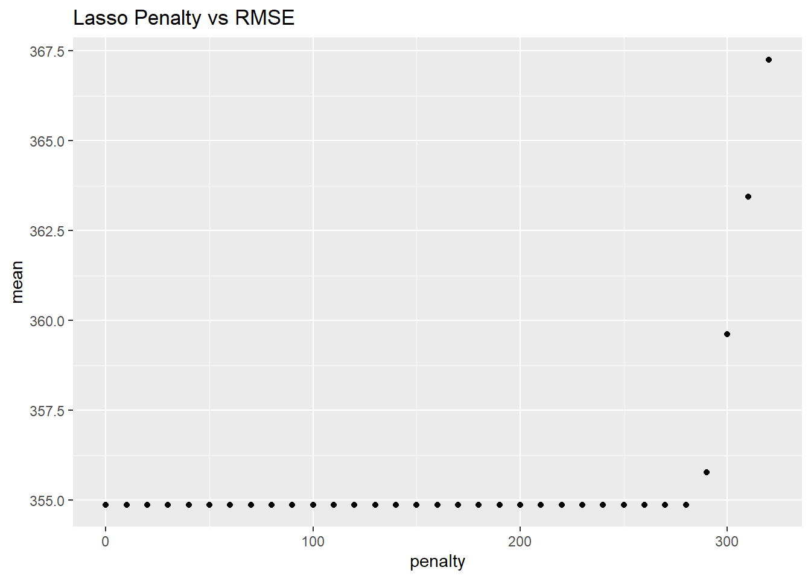
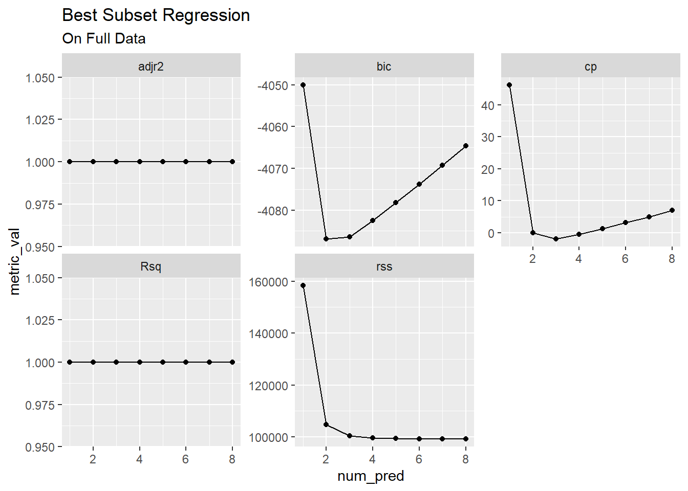
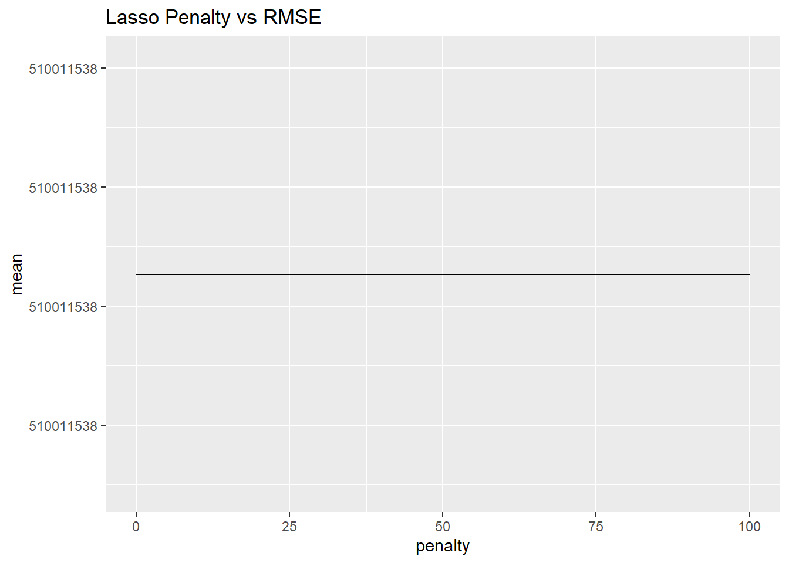

X <- rnorm(100, mean = 10, sd = 10)
ep <- rnorm(100,sd = 30)Homework 4 Solutions
1.
We perform best subset, forward stepwise, and backward stepwise selection on a single data set. For each approach, we obtain p + 1 models, containing \(0, 1, 2, . . . ,p\) predictors.
Explain your answers:
(a) Which of the three models with k predictors has the smallest training RSS?
Best subsets since it considers every possible combination. It is possible both forward and backward stepwise pick the same k predictor model and have the same training RSS.
- Which of the three models with k predictors has the smallest test RSS?
You cannot determine this to be sure. It depends if the best subset choice on the training set overfit. If it did, one of the other approach models could perform better.
- True or False:
- The predictors in the k-variable model identified by forward stepwise are a subset of the predictors in the (k+1)-variable model identified by forward stepwise selection.
True, FSR keeps all k predictors from the previous step and adds an additional variable.
- The predictors in the k-variable model identified by backward stepwise are a subset of the predictors in the (k + 1)- variable model identified by backward stepwise selection.
True, BSR drops 1 variable form a k+1 predictor model and goes down to a k variable model. The k variables must be in the k+1 variable model.
- The predictors in the k-variable model identified by backward stepwise are a subset of the predictors in the (k + 1)- variable model identified by forward stepwise selection.
False, not always true.
- The predictors in the k-variable model identified by forward stepwise are a subset of the predictors in the (k+1)-variable model identified by backward stepwise selection.
False, not always true.
- The predictors in the k-variable model identified by best subset are a subset of the predictors in the (k + 1)-variable model identified by best subset selection.
False, not always true.
8.
In this exercise, we will generate simulated data, and will then use this data to perform best subset selection.
- Use the rnorm() function to generate a predictor X of length n = 100, as well as a noise vector \(\epsilon\) of length n = 100.
- Generate a response vector \(Y\) of length \(n=100\) according to the model
\[Y=\beta_0 + \beta_1X+\beta_2X^2+\beta_3X^3+\epsilon,\]
where \(\beta_0,\beta_1,\) and \(\beta_3\) are constants of your choice.
Y = 5 + 3*X + 10*X^2+ 2*X^3 + ep- Use the regsubsets() function to perform best subset selection in order to choose the best model containing the predictors \(X\),\(X^2\), . . . ,\(X^{10}\). What is the best model obtained according to \(C_p\), BIC, and adjusted \(R^2\)? Show some plots to provide evidence for your answer, and report the coefficients of the best model obtained. Note you will need to use the data.frame() function to create a single data set containing both X and Y .
simdata <- data.frame(ysim = Y,xsim = X)
head(simdata) ysim xsim
1 1845.03133 8.368388
2 34.56759 -3.272097
3 14.39104 1.845040
4 5054.90702 12.113334
5 457.36512 4.704802
6 42.17828 1.571858create_metrics_table <- function(X){
K <- length(X$rsq)
metrics_df <- data.frame(num_pred= 1:K, # K different models
Rsq = X$rsq,
rss = X$rss,
adjr2 = X$adjr2,
cp = X$cp,
bic = X$bic) |>
tidyr::pivot_longer(cols=Rsq:bic,
names_to = "metric",values_to = "metric_val")
# This pivot puts the metric values in 1 column
# and creates another column for the name of
# the metric
return(metrics_df)
}library(leaps)Warning: package 'leaps' was built under R version 4.3.2bss_fit <- regsubsets(ysim~poly(xsim,10),data = simdata)
bss_fitSubset selection object
Call: regsubsets.formula(ysim ~ poly(xsim, 10), data = simdata)
10 Variables (and intercept)
Forced in Forced out
poly(xsim, 10)1 FALSE FALSE
poly(xsim, 10)2 FALSE FALSE
poly(xsim, 10)3 FALSE FALSE
poly(xsim, 10)4 FALSE FALSE
poly(xsim, 10)5 FALSE FALSE
poly(xsim, 10)6 FALSE FALSE
poly(xsim, 10)7 FALSE FALSE
poly(xsim, 10)8 FALSE FALSE
poly(xsim, 10)9 FALSE FALSE
poly(xsim, 10)10 FALSE FALSE
1 subsets of each size up to 8
Selection Algorithm: exhaustivebss_summary <- summary(bss_fit)
bss_summarySubset selection object
Call: regsubsets.formula(ysim ~ poly(xsim, 10), data = simdata)
10 Variables (and intercept)
Forced in Forced out
poly(xsim, 10)1 FALSE FALSE
poly(xsim, 10)2 FALSE FALSE
poly(xsim, 10)3 FALSE FALSE
poly(xsim, 10)4 FALSE FALSE
poly(xsim, 10)5 FALSE FALSE
poly(xsim, 10)6 FALSE FALSE
poly(xsim, 10)7 FALSE FALSE
poly(xsim, 10)8 FALSE FALSE
poly(xsim, 10)9 FALSE FALSE
poly(xsim, 10)10 FALSE FALSE
1 subsets of each size up to 8
Selection Algorithm: exhaustive
poly(xsim, 10)1 poly(xsim, 10)2 poly(xsim, 10)3 poly(xsim, 10)4
1 ( 1 ) "*" " " " " " "
2 ( 1 ) "*" "*" " " " "
3 ( 1 ) "*" "*" "*" " "
4 ( 1 ) "*" "*" "*" "*"
5 ( 1 ) "*" "*" "*" "*"
6 ( 1 ) "*" "*" "*" "*"
7 ( 1 ) "*" "*" "*" "*"
8 ( 1 ) "*" "*" "*" "*"
poly(xsim, 10)5 poly(xsim, 10)6 poly(xsim, 10)7 poly(xsim, 10)8
1 ( 1 ) " " " " " " " "
2 ( 1 ) " " " " " " " "
3 ( 1 ) " " " " " " " "
4 ( 1 ) " " " " " " " "
5 ( 1 ) "*" " " " " " "
6 ( 1 ) "*" " " "*" " "
7 ( 1 ) "*" "*" "*" " "
8 ( 1 ) "*" "*" "*" "*"
poly(xsim, 10)9 poly(xsim, 10)10
1 ( 1 ) " " " "
2 ( 1 ) " " " "
3 ( 1 ) " " " "
4 ( 1 ) " " " "
5 ( 1 ) " " " "
6 ( 1 ) " " " "
7 ( 1 ) " " " "
8 ( 1 ) " " " " library(ggplot2)Warning: package 'ggplot2' was built under R version 4.3.3bss_full_data_metrics <- create_metrics_table(bss_summary)
head(bss_full_data_metrics)# A tibble: 6 × 3
num_pred metric metric_val
<int> <chr> <dbl>
1 1 Rsq 6.57e-1
2 1 rss 5.51e+9
3 1 adjr2 6.53e-1
4 1 cp 4.95e+6
5 1 bic -9.77e+1
6 2 Rsq 9.45e-1bss_full_data_metrics |>
ggplot(aes(y=metric_val,x=num_pred))+
geom_line() + geom_point()+
facet_wrap(~metric,scales = "free_y")+
labs(title="Best Subset Regression",
subtitle = "On Full Data")
According to \(C_p\), BIC, and adjusted \(R^2\) the best model is the three variable model. On the adjusted \(R^\) graph you can see substantial improvements in the value between the 1 and 2 variable and the 2 and 3 variable model, and then little to no improvements beyond 3 variables. With \(C_p\) and BIC we see the same behavior with with substantial decreases in the values between 1 and 2 variable models and then again between 2 and 3 variable models. All 3 metrics agree that the best model is a model with 3 variables.
- Repeat (c), using forward stepwise selection and also using backwards stepwise selection. How does your answer compare to the results in (c)?
fsw_fit <- regsubsets(ysim~poly(xsim,10),data = simdata,method = "forward")
fsw_fitSubset selection object
Call: regsubsets.formula(ysim ~ poly(xsim, 10), data = simdata, method = "forward")
10 Variables (and intercept)
Forced in Forced out
poly(xsim, 10)1 FALSE FALSE
poly(xsim, 10)2 FALSE FALSE
poly(xsim, 10)3 FALSE FALSE
poly(xsim, 10)4 FALSE FALSE
poly(xsim, 10)5 FALSE FALSE
poly(xsim, 10)6 FALSE FALSE
poly(xsim, 10)7 FALSE FALSE
poly(xsim, 10)8 FALSE FALSE
poly(xsim, 10)9 FALSE FALSE
poly(xsim, 10)10 FALSE FALSE
1 subsets of each size up to 8
Selection Algorithm: forwardfsw_summary <- summary(fsw_fit)
fsw_summarySubset selection object
Call: regsubsets.formula(ysim ~ poly(xsim, 10), data = simdata, method = "forward")
10 Variables (and intercept)
Forced in Forced out
poly(xsim, 10)1 FALSE FALSE
poly(xsim, 10)2 FALSE FALSE
poly(xsim, 10)3 FALSE FALSE
poly(xsim, 10)4 FALSE FALSE
poly(xsim, 10)5 FALSE FALSE
poly(xsim, 10)6 FALSE FALSE
poly(xsim, 10)7 FALSE FALSE
poly(xsim, 10)8 FALSE FALSE
poly(xsim, 10)9 FALSE FALSE
poly(xsim, 10)10 FALSE FALSE
1 subsets of each size up to 8
Selection Algorithm: forward
poly(xsim, 10)1 poly(xsim, 10)2 poly(xsim, 10)3 poly(xsim, 10)4
1 ( 1 ) "*" " " " " " "
2 ( 1 ) "*" "*" " " " "
3 ( 1 ) "*" "*" "*" " "
4 ( 1 ) "*" "*" "*" "*"
5 ( 1 ) "*" "*" "*" "*"
6 ( 1 ) "*" "*" "*" "*"
7 ( 1 ) "*" "*" "*" "*"
8 ( 1 ) "*" "*" "*" "*"
poly(xsim, 10)5 poly(xsim, 10)6 poly(xsim, 10)7 poly(xsim, 10)8
1 ( 1 ) " " " " " " " "
2 ( 1 ) " " " " " " " "
3 ( 1 ) " " " " " " " "
4 ( 1 ) " " " " " " " "
5 ( 1 ) "*" " " " " " "
6 ( 1 ) "*" " " "*" " "
7 ( 1 ) "*" "*" "*" " "
8 ( 1 ) "*" "*" "*" "*"
poly(xsim, 10)9 poly(xsim, 10)10
1 ( 1 ) " " " "
2 ( 1 ) " " " "
3 ( 1 ) " " " "
4 ( 1 ) " " " "
5 ( 1 ) " " " "
6 ( 1 ) " " " "
7 ( 1 ) " " " "
8 ( 1 ) " " " " fsw_full_data_metrics <- create_metrics_table(fsw_summary)
head(fsw_full_data_metrics)# A tibble: 6 × 3
num_pred metric metric_val
<int> <chr> <dbl>
1 1 Rsq 6.57e-1
2 1 rss 5.51e+9
3 1 adjr2 6.53e-1
4 1 cp 4.95e+6
5 1 bic -9.77e+1
6 2 Rsq 9.45e-1fsw_full_data_metrics |>
ggplot(aes(y=metric_val,x=num_pred))+
geom_line() + geom_point()+
facet_wrap(~metric,scales = "free_y")+
labs(title="Forward Stepwise Regression",
subtitle = "On Full Data")
bsw_fit <- regsubsets(ysim~poly(xsim,10),data = simdata,method = "backward")
fsw_fitSubset selection object
Call: regsubsets.formula(ysim ~ poly(xsim, 10), data = simdata, method = "forward")
10 Variables (and intercept)
Forced in Forced out
poly(xsim, 10)1 FALSE FALSE
poly(xsim, 10)2 FALSE FALSE
poly(xsim, 10)3 FALSE FALSE
poly(xsim, 10)4 FALSE FALSE
poly(xsim, 10)5 FALSE FALSE
poly(xsim, 10)6 FALSE FALSE
poly(xsim, 10)7 FALSE FALSE
poly(xsim, 10)8 FALSE FALSE
poly(xsim, 10)9 FALSE FALSE
poly(xsim, 10)10 FALSE FALSE
1 subsets of each size up to 8
Selection Algorithm: forwardbsw_summary <- summary(bsw_fit)
bsw_summarySubset selection object
Call: regsubsets.formula(ysim ~ poly(xsim, 10), data = simdata, method = "backward")
10 Variables (and intercept)
Forced in Forced out
poly(xsim, 10)1 FALSE FALSE
poly(xsim, 10)2 FALSE FALSE
poly(xsim, 10)3 FALSE FALSE
poly(xsim, 10)4 FALSE FALSE
poly(xsim, 10)5 FALSE FALSE
poly(xsim, 10)6 FALSE FALSE
poly(xsim, 10)7 FALSE FALSE
poly(xsim, 10)8 FALSE FALSE
poly(xsim, 10)9 FALSE FALSE
poly(xsim, 10)10 FALSE FALSE
1 subsets of each size up to 8
Selection Algorithm: backward
poly(xsim, 10)1 poly(xsim, 10)2 poly(xsim, 10)3 poly(xsim, 10)4
1 ( 1 ) "*" " " " " " "
2 ( 1 ) "*" "*" " " " "
3 ( 1 ) "*" "*" "*" " "
4 ( 1 ) "*" "*" "*" "*"
5 ( 1 ) "*" "*" "*" "*"
6 ( 1 ) "*" "*" "*" "*"
7 ( 1 ) "*" "*" "*" "*"
8 ( 1 ) "*" "*" "*" "*"
poly(xsim, 10)5 poly(xsim, 10)6 poly(xsim, 10)7 poly(xsim, 10)8
1 ( 1 ) " " " " " " " "
2 ( 1 ) " " " " " " " "
3 ( 1 ) " " " " " " " "
4 ( 1 ) " " " " " " " "
5 ( 1 ) "*" " " " " " "
6 ( 1 ) "*" " " "*" " "
7 ( 1 ) "*" "*" "*" " "
8 ( 1 ) "*" "*" "*" "*"
poly(xsim, 10)9 poly(xsim, 10)10
1 ( 1 ) " " " "
2 ( 1 ) " " " "
3 ( 1 ) " " " "
4 ( 1 ) " " " "
5 ( 1 ) " " " "
6 ( 1 ) " " " "
7 ( 1 ) " " " "
8 ( 1 ) " " " " bsw_full_data_metrics <- create_metrics_table(bsw_summary)
head(bsw_full_data_metrics)# A tibble: 6 × 3
num_pred metric metric_val
<int> <chr> <dbl>
1 1 Rsq 6.57e-1
2 1 rss 5.51e+9
3 1 adjr2 6.53e-1
4 1 cp 4.95e+6
5 1 bic -9.77e+1
6 2 Rsq 9.45e-1bsw_full_data_metrics |>
ggplot(aes(y=metric_val,x=num_pred))+
geom_line() + geom_point()+
facet_wrap(~metric,scales = "free_y")+
labs(title="Backward Stepwise Regression",
subtitle = "On Full Data")
With both forward and backwards stepwise regression we see identical behavior of BIC, \(C_p\) and adjusted \(R^2\) as with the best subset regression, the best model is with 3 predictors.
- Now fit a lasso model to the simulated data, again using \(X\),\(X^2\), . . . ,\(X^{10}\) as predictors. Use cross-validation to select the optimal value of \(\lambda\). Create plots of the cross-validation error as a function of \(\lambda\). Report the resulting coefficient estimates, and discuss the results obtained.
library(tidymodels)── Attaching packages ────────────────────────────────────── tidymodels 1.1.1 ──✔ broom 1.0.5 ✔ rsample 1.2.1
✔ dials 1.2.1 ✔ tibble 3.2.1
✔ dplyr 1.1.4 ✔ tidyr 1.3.1
✔ infer 1.0.6 ✔ tune 1.2.1.9000
✔ modeldata 1.3.0 ✔ workflows 1.1.4
✔ parsnip 1.2.1 ✔ workflowsets 1.0.1
✔ purrr 1.0.2 ✔ yardstick 1.3.0
✔ recipes 1.0.10 Warning: package 'broom' was built under R version 4.3.1Warning: package 'dials' was built under R version 4.3.2Warning: package 'scales' was built under R version 4.3.2Warning: package 'dplyr' was built under R version 4.3.2Warning: package 'infer' was built under R version 4.3.2Warning: package 'modeldata' was built under R version 4.3.2Warning: package 'parsnip' was built under R version 4.3.3Warning: package 'purrr' was built under R version 4.3.1Warning: package 'recipes' was built under R version 4.3.2Warning: package 'rsample' was built under R version 4.3.3Warning: package 'tidyr' was built under R version 4.3.2Warning: package 'workflows' was built under R version 4.3.2Warning: package 'workflowsets' was built under R version 4.3.1Warning: package 'yardstick' was built under R version 4.3.2── Conflicts ───────────────────────────────────────── tidymodels_conflicts() ──
✖ purrr::discard() masks scales::discard()
✖ dplyr::filter() masks stats::filter()
✖ dplyr::lag() masks stats::lag()
✖ recipes::step() masks stats::step()
• Learn how to get started at https://www.tidymodels.org/start/set.seed(434)
simdat_alt <- simdata|>
bind_cols(poly(simdata$xsim,degree=10,simple = T,raw = T))|>
select(-xsim)
sim_cv <- vfold_cv(simdat_alt, v = 5)
lasso_spec <-
linear_reg(penalty = tune(), mixture = 1) |>
set_engine("glmnet")
lam_grid <- expand_grid(penalty = seq(0, 325, by = 10))
rec <- recipe(ysim ~ ., data = simdat_alt) |>
step_normalize(all_predictors())
results <- tune_grid(lasso_spec,
preprocessor = rec,
grid = lam_grid,
resamples = sim_cv)Warning: package 'glmnet' was built under R version 4.3.2Warning: package 'Matrix' was built under R version 4.3.2metrics<- results |>
collect_metrics()
metrics# A tibble: 66 × 7
penalty .metric .estimator mean n std_err .config
<dbl> <chr> <chr> <dbl> <int> <dbl> <chr>
1 0 rmse standard 355. 5 49.1 Preprocessor1_Model01
2 0 rsq standard 1.00 5 0.00000335 Preprocessor1_Model01
3 10 rmse standard 355. 5 49.1 Preprocessor1_Model02
4 10 rsq standard 1.00 5 0.00000335 Preprocessor1_Model02
5 20 rmse standard 355. 5 49.1 Preprocessor1_Model03
6 20 rsq standard 1.00 5 0.00000335 Preprocessor1_Model03
7 30 rmse standard 355. 5 49.1 Preprocessor1_Model04
8 30 rsq standard 1.00 5 0.00000335 Preprocessor1_Model04
9 40 rmse standard 355. 5 49.1 Preprocessor1_Model05
10 40 rsq standard 1.00 5 0.00000335 Preprocessor1_Model05
# ℹ 56 more rowsmetrics |>
filter(.metric =="rmse") |>
group_by(penalty)|>
summarise(penalty = min(penalty),
mean = mean(mean))|>
ggplot(aes(x=penalty,y=mean)) +
geom_point()+
labs(title = "Lasso Penalty vs RMSE")
final_spec <- linear_reg(penalty = 0, mixture = 1) |>
set_engine("glmnet")
final_lasso_workflow <- workflow()|>
add_model(final_spec) |>
add_recipe(rec)
final_lasso_fit <- final_lasso_workflow|>
fit(data =simdat_alt)
final_lasso_fit |> tidy()# A tibble: 11 × 3
term estimate penalty
<chr> <dbl> <dbl>
1 (Intercept) 8587. 0
2 1 0 0
3 2 1848. 0
4 3 10578. 0
5 4 0 0
6 5 0 0
7 6 0 0
8 7 0 0
9 8 0 0
10 9 0 0
11 10 0 0Lasso regression keeps only variables \(X^2\) and \(X^3\) which misses X.
- Now generate a response vector Y according to the model
\[Y=\beta_0 + \beta_7X^7 + \epsilon\]
and perform best subset selection and the lasso. Discuss the results obtained.
New Sim Data
Y2 = 5 + 3*X + 5*X^7 + ep
simdata_2 <- data.frame(ysim = Y2,xsim = X)
## This is to fit the model with the polynomials
simdat_alt_2 <- simdata_2|>
bind_cols(poly(simdata$xsim,degree=10,simple = T,raw = T))|>
select(-xsim)Best Subsets
bss_fit_2 <- regsubsets(ysim~.,data = simdat_alt_2)
bss_fit_2Subset selection object
Call: regsubsets.formula(ysim ~ ., data = simdat_alt_2)
10 Variables (and intercept)
Forced in Forced out
`1` FALSE FALSE
`2` FALSE FALSE
`3` FALSE FALSE
`4` FALSE FALSE
`5` FALSE FALSE
`6` FALSE FALSE
`7` FALSE FALSE
`8` FALSE FALSE
`9` FALSE FALSE
`10` FALSE FALSE
1 subsets of each size up to 8
Selection Algorithm: exhaustivebss_summary_2 <- summary(bss_fit_2)
bss_summary_2Subset selection object
Call: regsubsets.formula(ysim ~ ., data = simdat_alt_2)
10 Variables (and intercept)
Forced in Forced out
`1` FALSE FALSE
`2` FALSE FALSE
`3` FALSE FALSE
`4` FALSE FALSE
`5` FALSE FALSE
`6` FALSE FALSE
`7` FALSE FALSE
`8` FALSE FALSE
`9` FALSE FALSE
`10` FALSE FALSE
1 subsets of each size up to 8
Selection Algorithm: exhaustive
`1` `2` `3` `4` `5` `6` `7` `8` `9` `10`
1 ( 1 ) " " " " " " " " " " " " "*" " " " " " "
2 ( 1 ) "*" " " " " " " " " " " "*" " " " " " "
3 ( 1 ) " " " " "*" "*" " " " " "*" " " " " " "
4 ( 1 ) "*" " " " " " " "*" "*" "*" " " " " " "
5 ( 1 ) "*" "*" " " " " "*" "*" "*" " " " " " "
6 ( 1 ) "*" " " " " "*" "*" " " "*" " " "*" "*"
7 ( 1 ) "*" "*" " " " " " " "*" "*" "*" "*" "*"
8 ( 1 ) "*" "*" " " "*" " " "*" "*" "*" "*" "*" bss_full_data_metrics_2 <- create_metrics_table(bss_summary_2)
head(bss_full_data_metrics_2)# A tibble: 6 × 3
num_pred metric metric_val
<int> <chr> <dbl>
1 1 Rsq 1
2 1 rss 158450.
3 1 adjr2 1
4 1 cp 46.2
5 1 bic -4050.
6 2 Rsq 1 bss_full_data_metrics_2 |>
ggplot(aes(y=metric_val,x=num_pred))+
geom_line() + geom_point()+
facet_wrap(~metric,scales = "free_y")+
labs(title="Best Subset Regression",
subtitle = "On Full Data")
Best subsets indicates that either two or eight coefficients should be kept. If we choose 2, the model would be X and \(X^7\), the correct model. If we choose predictors then we would keep all but \(X^4\), \(X^5\) and \(X^6\).
Lasso
library(tidymodels)
set.seed(434)
sim_cv <- vfold_cv(simdat_alt_2, v = 5)
lasso_spec <-
linear_reg(penalty = tune(), mixture = 1) |>
set_engine("glmnet")
lam_grid <- expand_grid(penalty = seq(0, 100, by = 10))
rec <- recipe(ysim ~ ., data = simdat_alt_2) |>
step_scale(all_predictors())
results <- tune_grid(lasso_spec,
preprocessor = rec,
grid = lam_grid,
resamples = sim_cv)
metrics<- results |>
collect_metrics()
metrics# A tibble: 22 × 7
penalty .metric .estimator mean n std_err .config
<dbl> <chr> <chr> <dbl> <int> <dbl> <chr>
1 0 rmse standard 510011538. 5 3.43e+8 Preprocessor1_Model01
2 0 rsq standard 1.00 5 1.22e-6 Preprocessor1_Model01
3 10 rmse standard 510011538. 5 3.43e+8 Preprocessor1_Model02
4 10 rsq standard 1.00 5 1.22e-6 Preprocessor1_Model02
5 20 rmse standard 510011538. 5 3.43e+8 Preprocessor1_Model03
6 20 rsq standard 1.00 5 1.22e-6 Preprocessor1_Model03
7 30 rmse standard 510011538. 5 3.43e+8 Preprocessor1_Model04
8 30 rsq standard 1.00 5 1.22e-6 Preprocessor1_Model04
9 40 rmse standard 510011538. 5 3.43e+8 Preprocessor1_Model05
10 40 rsq standard 1.00 5 1.22e-6 Preprocessor1_Model05
# ℹ 12 more rowsmetrics |>
filter(.metric =="rmse") |>
group_by(penalty)|>
summarise(penalty = min(penalty),
mean = mean(mean))|>
ggplot(aes(x=penalty,y=mean)) +
geom_line()+
labs(title = "Lasso Penalty vs RMSE")
metrics |> filter(.metric=="rmse") |>
arrange(mean)# A tibble: 11 × 7
penalty .metric .estimator mean n std_err .config
<dbl> <chr> <chr> <dbl> <int> <dbl> <chr>
1 0 rmse standard 510011538. 5 342846372. Preprocessor1_Model01
2 10 rmse standard 510011538. 5 342846372. Preprocessor1_Model02
3 20 rmse standard 510011538. 5 342846372. Preprocessor1_Model03
4 30 rmse standard 510011538. 5 342846372. Preprocessor1_Model04
5 40 rmse standard 510011538. 5 342846372. Preprocessor1_Model05
6 50 rmse standard 510011538. 5 342846372. Preprocessor1_Model06
7 60 rmse standard 510011538. 5 342846372. Preprocessor1_Model07
8 70 rmse standard 510011538. 5 342846372. Preprocessor1_Model08
9 80 rmse standard 510011538. 5 342846372. Preprocessor1_Model09
10 90 rmse standard 510011538. 5 342846372. Preprocessor1_Model10
11 100 rmse standard 510011538. 5 342846372. Preprocessor1_Model11# Choose lambda = 81
final_spec <- linear_reg(penalty = 0, mixture = 1) |>
set_engine("glmnet")
final_lasso_workflow <- workflow()|>
add_model(final_spec) |>
add_recipe(rec)
final_lasso_fit <- final_lasso_workflow|>
fit(data =simdat_alt_2)
final_lasso_fit |> tidy()# A tibble: 11 × 3
term estimate penalty
<chr> <dbl> <dbl>
1 (Intercept) 130518046. 0
2 1 0 0
3 2 0 0
4 3 0 0
5 4 0 0
6 5 0 0
7 6 415202305. 0
8 7 24905659724. 0
9 8 20982661. 0
10 9 0 0
11 10 0 0In this case, lasso keeps the intercept and coefficients for \(X^6\), \(X^7\) and \(X^8\). Best subsets did a better job.